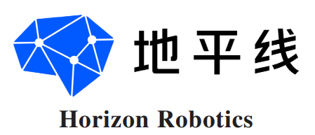
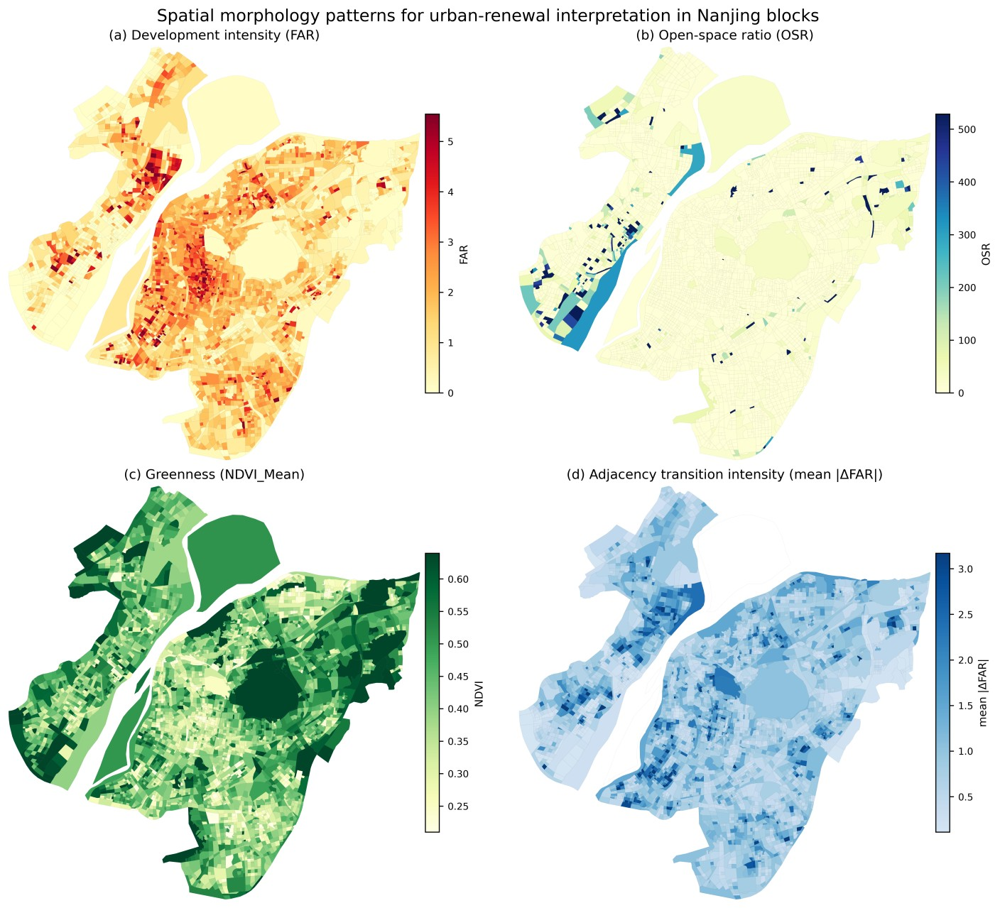
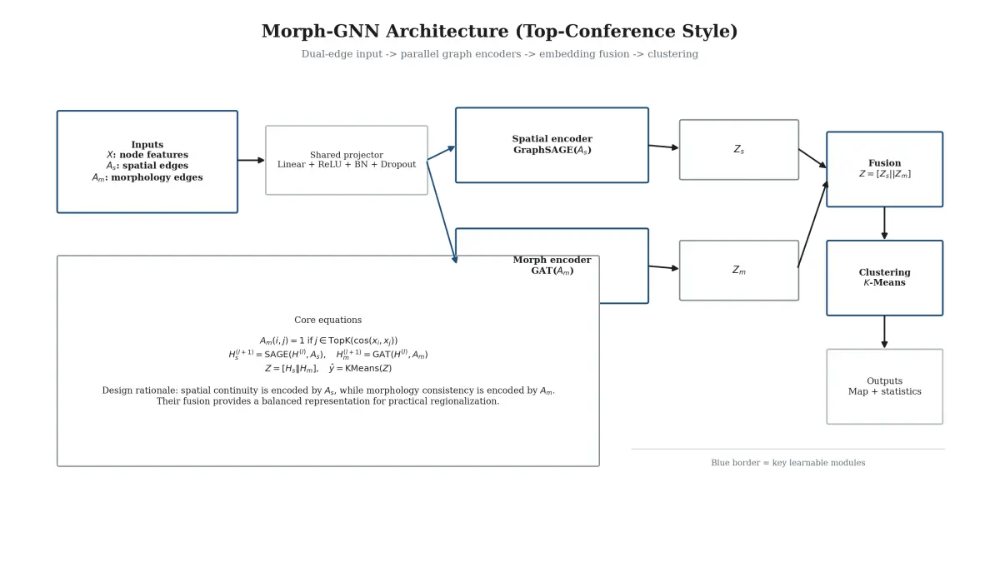
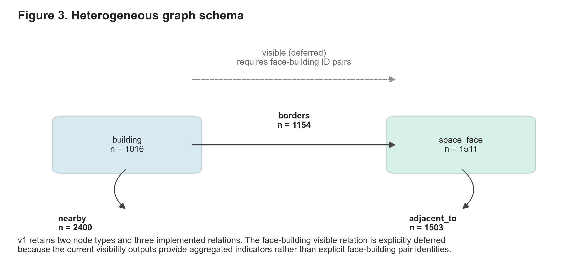

2024 — 2027
Nanjing University
数字建筑与 CAAD · 硕士研究生 · 推免
Rank 2 / 7 · 南京大学城市 AI 与绿色人居营造省重点实验室
AI product · agent systems · urban intelligence
AI 产品、Agent 系统与城市智能。
数字建筑与 CAAD · 硕士研究生 · 推免
Rank 2 / 7 · 南京大学城市 AI 与绿色人居营造省重点实验室
本科 · 建筑 / 城市与计算方向
Rank 2 / 87

北京地平线信息技术有限公司 · 地平线研究院 · 机器人实验室
围绕具身智能基座模型的工程化落地，将实验室分散的部署、训练、评测和真机流程梳理为可复用、可交付、可由 Agent 接手的产品化工作流。
围绕 RoboOrchardLab、EmbodiedGen、HoloBrain 梳理环境搭建、依赖安装、任务提交、结果验证与异常排查链路，参与 Docker 交付标准与部署路径整理。
参与 EgoSuite-Open100K、InternData-A1 的质检平台与标注规范设计，定义 episode、subtask、动作、文本与 Pose 字段及导出 schema。
将部署和训练中的高频问题沉淀为 Skill、排查清单与文档模板，降低复杂工程任务对专家经验的依赖。
行至智能科技（北京）· 行至研究院
面向军工大模型垂直应用，独立完成企业 AI 能力中台的产品原型设计与核心流程验证。
设计个人资产与市场资产双库，建立 Skills / MCP Tools 的创建、发布、撤回与只读复用规则，并落地“消息 → 工具调用 → 观测 → 完成”的 ReAct 执行闭环。
设计关键词检索与 LLM 语义重排序双模式资源发现，帮助企业在资产增长后仍能快速找到并准确匹配可复用的 Skills 与 Tools。
面向多 Agent 并行开发的桌面编排与治理工作台
我参与产品设计与前端核心功能开发，把多个 Claude Code / Codex CLI 工作位组织成可切换、可观察、可恢复的 tmux-like 工作流。
我的研究关注城市形态、空间关系与图学习之间的连接，尝试把不完整的城市证据转化为可分析、可解释的空间知识。

提出 Morpho-GNN，在空间邻接与形态相似性的联合图结构中重建缺失的街区形态证据，为城市更新单元划定提供连续的空间依据。
Publisher record ↗
构建双通道 Morph-GNN，同时编码空间邻接和形态相似性，在南京 4,364 个街区上生成连续且内部一致的城市形态区域。
CUMINCAD paper page ↗
建立建筑—外部空间异质图数据模型，将形态证据与空间关系连接起来，支持历史街区的保护优先与低干预更新判断。
Conference paper · Shanghai